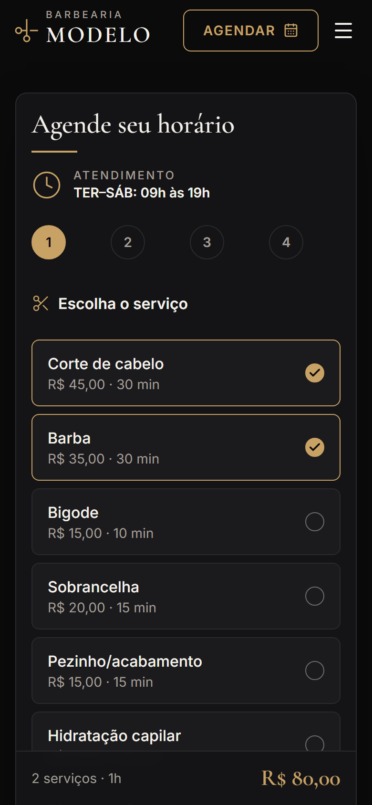
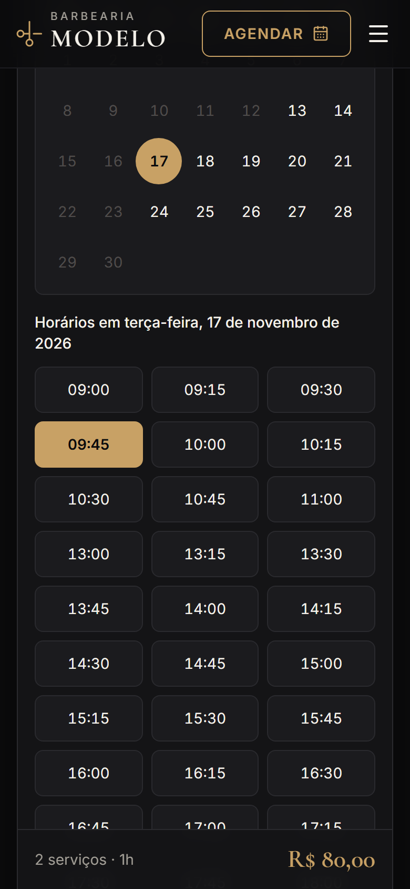
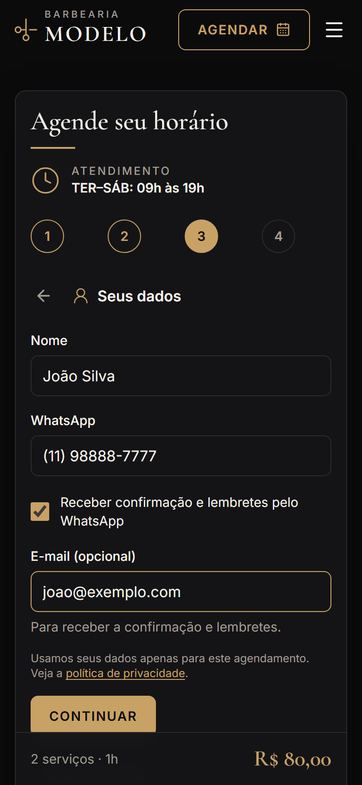
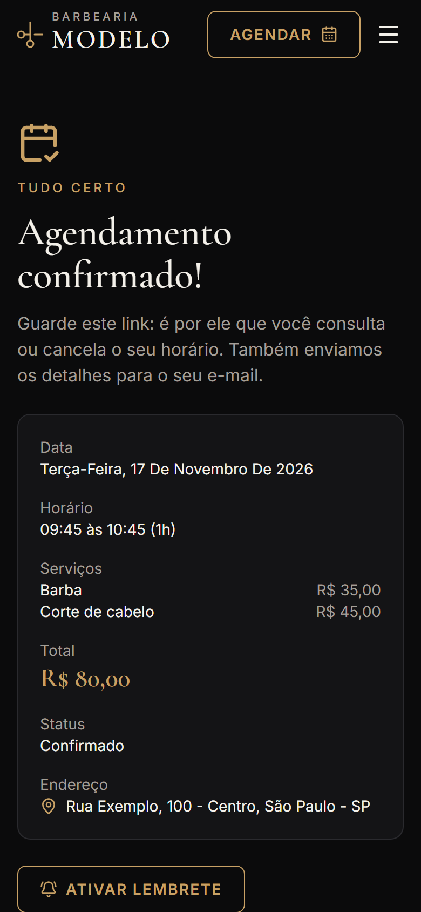
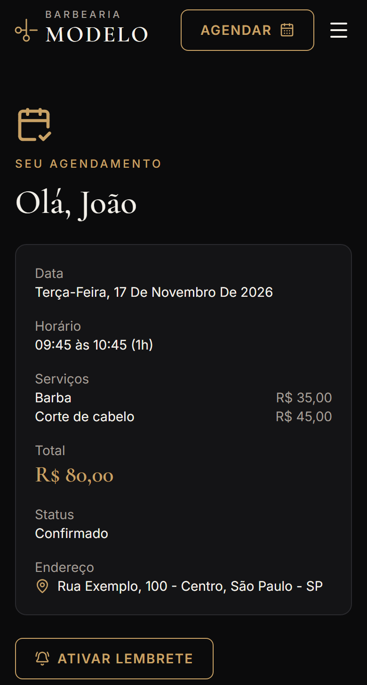
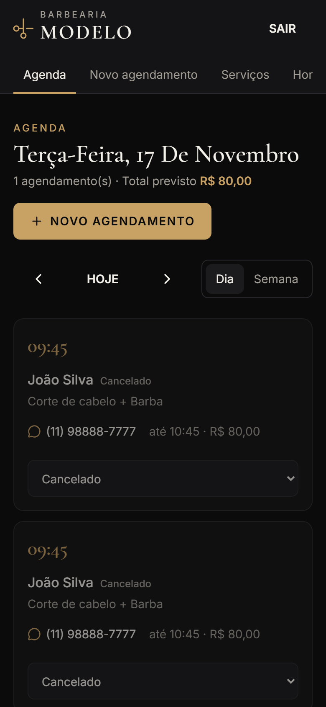
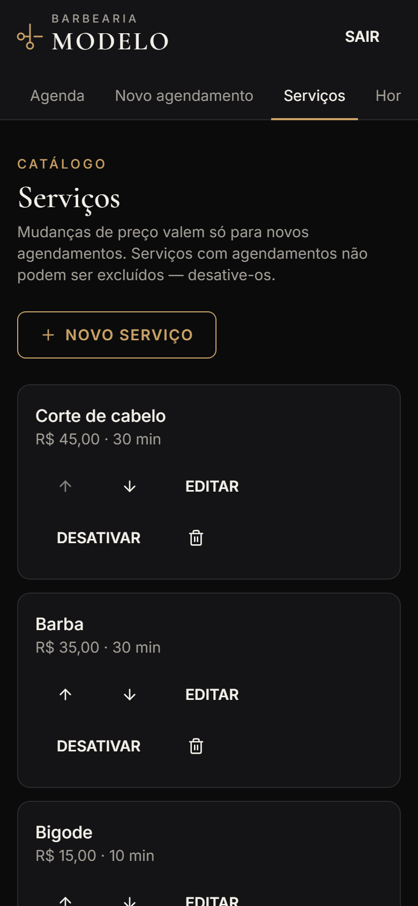
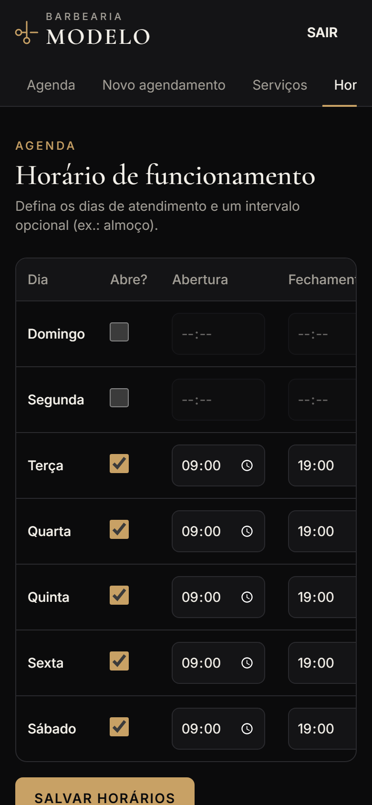
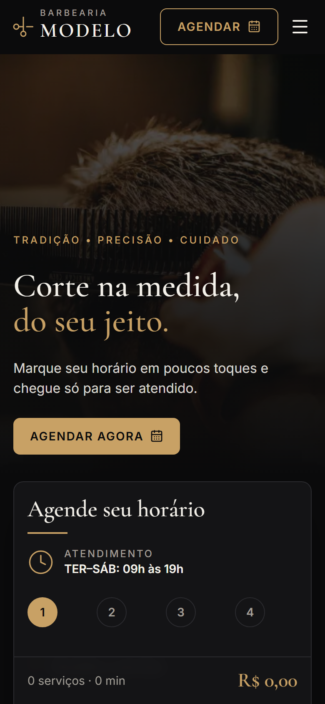

O que é, como funciona e como vender. Um guia simples para você apresentar o produto e fechar a venda.
Leia tudo uma vez, com calma. Leva uns 20 minutos. Depois, deixe a apostila no celular e consulte as páginas de venda quando precisar.
Páginas 3 a 8. Você vai saber explicar o produto com as suas palavras.
Páginas 9 a 14. Para quem vender, como chegar, o que falar e o que mostrar.
Páginas 15 a 17. Preço, condições, o que não prometer e o que pedir ao cliente.
Duas palavras que você vai ver muito:
Dono é quem compra de você: o dono da barbearia ou o barbeiro.
Cliente da barbearia é quem corta o cabelo lá e vai usar o site para marcar horário.
Onde aparecer a etiqueta a confirmar, a regra ainda não foi fechada. Pergunte ao responsável antes de responder ao dono.
Um site próprio da barbearia onde o cliente marca o horário sozinho, pelo celular, em menos de um minuto.
Hoje a maioria das barbearias marca horário por mensagem ou ligação. Isso dá três dores de cabeça:
O barbeiro para o corte para responder mensagem. Ou responde tarde e perde o cliente.
Dois clientes no mesmo horário, horário anotado errado, agenda no papel ou na cabeça.
O cliente esquece e não aparece. A cadeira fica vazia e ninguém ocupa o lugar.
Para lembrar: cada instalação atende uma barbearia com um barbeiro. Se a barbearia tem vários barbeiros com agendas separadas, o produto ainda não atende (veja a página 16).
São quatro passos, todos no celular. Não tem cadastro, senha nem aplicativo para baixar.
Pode marcar um ou vários. O site soma o preço e o tempo na hora.

Só aparecem horários livres. Não tem como marcar em cima de outro cliente.

Só nome e WhatsApp. O e-mail é opcional.

Vê o resumo, toca em confirmar e pronto. O horário está marcado.

| Até quando marcar | De hoje até 30 dias para a frente. |
|---|---|
| Antecedência | O horário precisa começar daqui a pelo menos 1 hora. Não dá para marcar "para agora". |
| Limite | Cada número de WhatsApp pode ter até 2 horários futuros marcados. Evita que alguém trave a agenda. |
| Horários | O site calcula sozinho. Um combo de 1 hora só aparece onde cabe 1 hora inteira. |
O cliente recebe um link só dele. Por esse link ele vê o horário e pode cancelar, sem ligar para a barbearia.

É a parte que só o barbeiro vê. Ele entra com e-mail e senha, no celular ou no computador.



Ponto forte na venda: o barbeiro muda preço e horário sozinho, na hora, sem depender de ninguém.
Na venda, fale primeiro do que o dono ganha. Depois mostre que o cliente dele também sai ganhando.
"Hoje o senhor para o corte para responder mensagem. Com o site, o cliente marca sozinho e o senhor só olha a agenda pronta."
A barbearia escolhe. Existe uma forma grátis, que já vem no produto, e o WhatsApp automático, que é opcional e tem custo por mensagem.
| Avisos grátis | WhatsApp automático (opcional) | |
|---|---|---|
| Por onde chega | E-mail e notificação no celular | WhatsApp do cliente |
| O que envia | Confirmação por e-mail. Lembretes de 24 h e 2 h por e-mail e por notificação. | Confirmação, lembretes de 24 h e 2 h e aviso quando o horário é cancelado. |
| Custo por mensagem | Nenhum | Cerca de , cobrado pela Meta (dona do WhatsApp) |
| A barbearia precisa de | Nada | Cadastro de empresa na Meta e um número de telefone só para isso |
| Ponto de atenção | O cliente precisa informar o e-mail ou tocar em "Ativar lembrete". Sem isso, não recebe aviso. | O custo cresce com o movimento. A ativação leva alguns dias. |
Cada horário marcado gera até 3 mensagens: confirmação e dois lembretes. Dá cerca de por horário.
| Horários no mês | Mensagens | Custo por mês |
|---|---|---|
| 100 | 300 | R$ 10,50 |
| 200 | 600 | R$ 21,00 |
| 300 | 900 | R$ 31,50 |
| 400 | 1.200 | R$ 42,00 |
Valores aproximados, pela tabela da Meta de . A Meta pode mudar o preço.
"O aviso por e-mail e notificação já vem no site, sem custo. Se quiser o lembrete no WhatsApp do cliente, a gente ativa. Aí tem um custo pequeno por mensagem: uns R$ 20 por mês para 200 horários."
Quem paga as mensagens: a barbearia. a confirmar
Nos dois casos o barbeiro tem, no painel, um botão que abre a conversa com o cliente no WhatsApp dele. Isso é grátis, mas é manual: ele mesmo escreve a mensagem.
Vendeu sem WhatsApp? Avise o responsável. Hoje a tela de agendamento mostra a opção "Receber confirmação e lembretes pelo WhatsApp" mesmo sem o WhatsApp ativado. Ele precisa ajustar o site daquele cliente.
Não ofereça para todo mundo. Procure a barbearia que já sente o problema. Ela compra mais rápido.
| O que você vê ou ouve | O que isso quer dizer |
|---|---|
| "Agendamentos pelo direct" ou número de WhatsApp na bio do Instagram | Marca tudo na mão. É o melhor sinal. |
| O barbeiro pega o celular no meio do corte | Está perdendo tempo com mensagem. |
| Cliente comenta "mandei mensagem e não respondeu" | Está perdendo cliente. |
| Caderno ou agenda de papel no balcão | Risco de erro e de horário em dobro. |
| "O cara marcou e não veio" | Sofre com falta. Fale do lembrete. |
Deixe o dono falar. A dor que ele contar é o que você vai usar para vender.
Quatro caminhos. O melhor é a visita, porque o dono vê funcionando no seu celular.
Quando: horário de pouco movimento. Terça a quinta, no meio da manhã ou no começo da tarde. Nunca no sábado.
Quando: para marcar a visita ou retomar um contato.
Quando: para achar barbearias e fazer o primeiro contato.
Quando: sempre que fechar uma venda.
Regra de ouro: o objetivo da primeira conversa não é vender. É fazer o dono ver o site funcionando e aceitar o teste de .
Não explique. Mostre. Coloque o celular na mão do dono e deixe ele marcar um horário.

| Tempo | O que fazer | O que dizer |
|---|---|---|
| 30 s | Abra o site de demonstração no seu celular. | "Esse seria o site da sua barbearia, com seu nome e suas fotos." |
| 1 min | Entregue o celular. Peça para ele tocar em agendar e escolher um serviço. | "Faz de conta que o senhor é o cliente. Marca um corte." |
| 1 min | Ele escolhe dia, hora, põe nome e WhatsApp e confirma. | "Viu? Sem cadastro, sem senha, sem baixar nada." |
| 1 min | Pegue o celular, entre no painel e mostre o horário que ele marcou. | "E aqui é o que o senhor vê. O horário já está na sua agenda." |
| 1 min | Mostre a troca de preço e o bloqueio de um dia. | "Mudou o preço? Vai folgar? O senhor mesmo ajusta aqui." |
| 30 s | Faça a oferta do teste. | "Quer usar sem pagar nada, para ver na prática?" |
Endereço do site de demonstração e acesso ao painel: peça ao responsável. a confirmar
Gatilho é um motivo que faz a pessoa prestar atenção e decidir. Use um ou dois por conversa, não todos.
| Gatilho | Quando usar | Frase pronta |
|---|---|---|
| Dor | No começo, depois que o dono contar um problema. | "Quanto o senhor perde quando um cliente marca e não aparece?" |
| Facilidade | Quando ele achar que é complicado. | "O cliente marca em quatro toques. Só nome e WhatsApp." |
| Ver para crer | Sempre. É o mais forte. | "Marca um horário aqui no meu celular para o senhor ver." |
| Teste sem risco | Quando ele hesitar. | "São grátis. Se não gostar, não paga nada." |
| Preço pequeno | Na hora de falar da mensalidade. | " por mês é o valor de dois cortes." |
| Parcelamento | Na hora de falar do valor do site. | "Fica em ." |
| Bônus | No fechamento. | "E a manutenção o senhor só começa a pagar depois de ." |
| Imagem profissional | Para quem cuida da marca e do Instagram. | "Um link com o nome da sua barbearia na bio passa outra imagem." |
| Tempo livre | Para quem trabalha sozinho. | "A agenda enche enquanto o senhor corta. Sem pegar no celular." |
| Cliente fora de hora | Para quem fecha cedo ou não abre domingo. | "Quem lembra de marcar às 11 da noite, marca. Hoje esse cliente fica sem resposta." |
Só use o que é verdade. Não diga "últimas vagas", "promoção só hoje" ou "mais de cem barbearias já usam" se não for real. Não prometa um número de redução de faltas: diga que o lembrete ajuda o cliente a não esquecer. Uma promessa falsa custa a venda e as indicações.
Copie, troque o que está entre colchetes e envie. Mensagem curta é mensagem lida.
Oi, [nome]! Tudo bem? Vi o trabalho da [nome da barbearia] no Instagram, muito bom.
Eu trabalho com um site de agendamento para barbearias. O cliente marca o horário sozinho pelo celular e o senhor só confere a agenda.
Posso passar aí e mostrar em 5 minutos? Qual o melhor dia?
[nome], aqui está o site de exemplo: [link]
Faz um teste: marca um corte como se fosse cliente. Leva menos de um minuto. Depois me conta o que achou.
Oi, [nome]! Conseguiu testar o agendamento?
Se preferir, eu deixo o site funcionando por sem custo, para o senhor usar com clientes de verdade e decidir depois.
[nome], resumindo o que combinamos:
• Site da [nome da barbearia]: , em
• de uso grátis para testar
• Manutenção: os primeiros são grátis, depois por mês
Para começar, preciso do nome, endereço, serviços com preço e os horários de atendimento. Pode me mandar por aqui?
[nome], que bom que deu certo! O senhor conhece outro barbeiro que também marca tudo por mensagem? Se puder me passar o contato, eu falo que foi o senhor que indicou.
Dicas: use o nome da pessoa e o da barbearia. Mande em horário comercial, fora do sábado. Se não responder depois do retorno, espere duas semanas antes de tentar de novo.
Objeção não é "não". É dúvida. Concorde primeiro, responda depois e termine com uma pergunta.
"E vão poder continuar. O site é para o senhor não precisar responder um por um. Quantas mensagens o senhor responde por dia só para marcar horário?"
"São quatro toques, só nome e WhatsApp. E para quem preferir ligar, o senhor marca na mão pelo painel. Quer testar com um cliente seu?"
"Entendo. O site sai por em quatro vezes. A mensalidade é o valor de dois cortes, e os primeiros são grátis. Uma falta evitada por mês já cobre boa parte."
"Sem problema. O senhor fica só com o site, por . Quando precisar de alguma alteração, cada atendimento sai por . O plano compensa para quem muda as coisas com frequência."
"Claro. Para o senhor pensar com o site na mão, eu libero os grátis. Se não gostar, não paga nada. Posso deixar pronto até quando?"
"Ótimo, é lá que o link vai. O Instagram mostra o trabalho; o site fecha o horário. Hoje, quando alguém pede horário no direct, quanto tempo leva para o senhor responder?"
"Dá para manter os dois. O senhor libera no site só os horários que quiser e bloqueia o resto. Tem cliente seu que desiste quando vê a fila?"
"O plano de manutenção cobre suporte e correções. E o agendamento não depende de mim: o senhor controla tudo pelo painel."
"Pode. O aviso por e-mail e notificação já vem no site, sem custo. O lembrete no WhatsApp é opcional e tem um custo pequeno por mensagem. Explico os dois e o senhor escolhe." (página 8)
"Hoje não. O site cuida do agendamento e o pagamento continua na barbearia, do jeito que o senhor já faz."
Se não souber responder: diga "vou confirmar e te respondo ainda hoje". É melhor do que inventar.
Só fale de preço depois que o dono viu o site funcionando. Apresente nesta ordem: teste, site, manutenção.
O dono usa antes de pagar. Se não gostar, não paga nada.
Pago uma vez. Site montado com os dados da barbearia.
Opcional. O dono pode ficar só com o site.
| Com plano de manutenção | Só o site | |
|---|---|---|
| Site | em | em |
| Mensalidade | grátis, depois por mês | Não tem |
| Manutenção | Incluída no plano | cada vez que precisar |
| Para quem é | Quem quer suporte e muda o site com frequência | Quem quase não muda nada |
O WhatsApp automático não entra na manutenção: o custo das mensagens é por conta da barbearia (página 8). a confirmar
"O senhor testa sem pagar. Gostando, o site fica em . A manutenção o senhor só começa a pagar no quarto mês: , o valor de dois cortes."
Fale a parcela, não o total. Depois espere o dono responder.
Pergunte ao responsável antes de prometer a confirmar: como funciona o teste de (site de exemplo ou já com os dados da barbearia) e o que acontece com o site de quem não contrata a manutenção.
Prometer o que não existe faz o cliente cancelar e falar mal. Se o dono pedir algo desta lista, diga que hoje não tem.
"Hoje o site não faz isso. Ele resolve o agendamento, que é onde o senhor perde mais tempo. Vou passar a sua sugestão para o responsável."
Anote o pedido e avise o responsável. Pedidos repetidos ajudam a decidir o que entra depois.
| O cliente precisa baixar aplicativo? | Não. Abre pelo link, em iPhone, Android ou computador. |
|---|---|
| Dois clientes podem marcar o mesmo horário? | Não. Quem confirmar primeiro fica com o horário; o outro é avisado para escolher outro. |
| O barbeiro pode marcar para quem ligou? | Sim, pelo painel, em qualquer horário livre. |
| Os dados do cliente ficam seguros? | O site pede só nome e WhatsApp. Cada cliente vê só o próprio horário. A agenda completa fica no painel, com senha. |
| Prazo de entrega e endereço próprio do site? | Pergunte ao responsável. a confirmar |
O dono disse sim. Antes de sair, pegue tudo o que o responsável precisa para montar o site.
Resumo da venda em três frases: O cliente marca sozinho, em menos de um minuto. O senhor para de responder mensagem e vê a agenda pronta. E testa sem pagar nada.